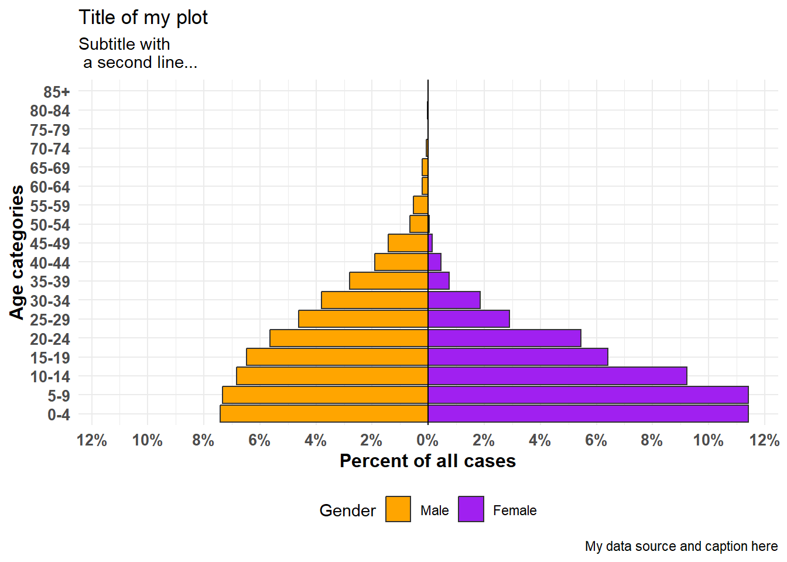
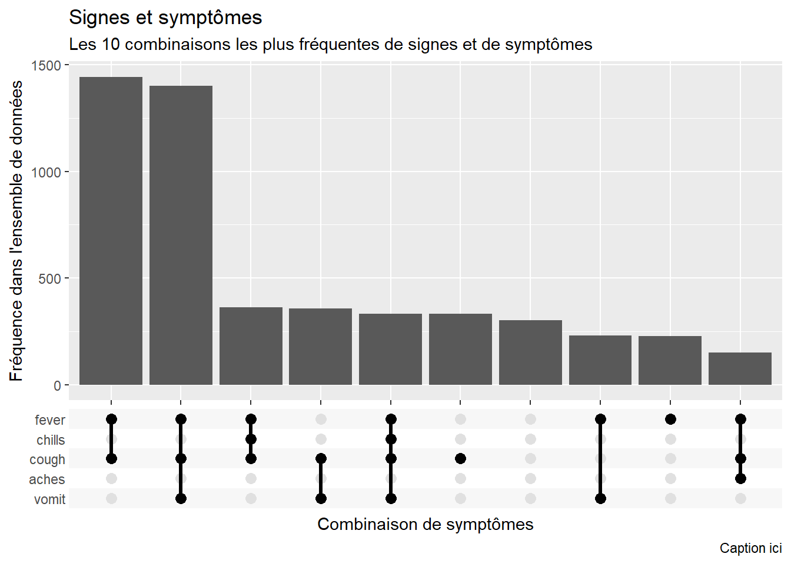

34 Pyramides démographiques et échelles de Likert


Les pyramides démographiques sont utiles pour montrer les distributions d’âge et de sexe. Un code similaire peut être utilisé pour visualiser les résultats de questions d’enquête de type Likert (par exemple, “Tout à fait d’accord”, “D’accord”, “Neutre”, “Pas d’accord”, “Pas du tout d’accord”). Dans cette page, nous couvrons les points suivants :
- Des pyramides rapides et faciles à réaliser grâce au package apyramid
- Des pyramides plus personnalisables grâce à
ggplot()
- Affichage de données démographiques “de référence” à l’arrière-plan de la pyramide
- Utilisation de graphiques de type pyramide pour afficher d’autres types de données (par exemple, les réponses à des questions d’enquête de type Likert).
34.1 Preparation
Charger les packages
Ce morceau de code montre le chargement des packages nécessaires aux analyses. Dans ce manuel, nous mettons l’accent sur p_load() de pacman, qui installe le package si nécessaire et le charge pour l’utiliser. Vous pouvez également charger les packages installés avec library() à partir de la base R. Voir la page sur les bases de R pour plus d’informations sur les packages R.
pacman::p_load(rio, # Pour importer les données
here, # Pour localiser les fichiers
tidyverse, # Pour nettoyer, traiter et représenter les données (inclut le package ggplot2)
apyramid, # Un package dédié à la création de pyramides des âges
janitor, # Tableaux et nettoyage des données
stringr) # Pour travailler avec des chaînes de caractères pour les titres, les légendes, etc.Importer les données
Pour commencer, nous importons la liste de cas nettoyée d’une épidémie d’Ebola simulée. Si vous voulez le faire en même temps, cliquez pour télécharger la liste des cas “nettoyée”. (sous le format .rds). Importez des données à l’aide de la fonction import() du package rio (elle gère de nombreux types de fichiers tels que .xlsx, .csv, .rds - voir la page Importation et exportation pour plus de détails).
# Importer la liste des cas dans R
linelist <- import("linelist_cleaned.rds")Les 50 premières lignes de la liste des cas sont affichées ci-dessous.
Nettoyage
Pour réaliser une pyramide démographique traditionnelle par âge/sexe, les données doivent d’abord être nettoyées de la manière suivante :
La colonne sexe doit être nettoyée.
Selon votre méthode, l’âge doit être stocké soit sous forme numérique, soit dans une colonne de catégorie d’âge.
Si vous utilisez des catégories d’âge, les valeurs de la colonne doivent être ordonnées correctement, soit par défaut en alphanumérique, soit intentionnellement en convertissant en facteur de classe.
Ci-dessous nous utilisons tabyl() du package janitor pour inspecter les colonnes gender et age_cat5.
linelist %>%
tabyl(age_cat5, gender)## age_cat5 f m NA_
## 0-4 640 416 39
## 5-9 641 412 42
## 10-14 518 383 40
## 15-19 359 364 20
## 20-24 305 316 17
## 25-29 163 259 13
## 30-34 104 213 9
## 35-39 42 157 3
## 40-44 25 107 1
## 45-49 8 80 5
## 50-54 2 37 1
## 55-59 0 30 0
## 60-64 0 12 0
## 65-69 0 12 1
## 70-74 0 4 0
## 75-79 0 0 1
## 80-84 0 1 0
## 85+ 0 0 0
## <NA> 0 0 86Nous effectuons également un rapide histogramme sur la colonne age pour nous assurer qu’elle est propre et correctement classée :
hist(linelist$age)
34.2 Le package apyramid
Le package apyramid est un produit du projet R4Epis. Vous pouvez en savoir plus sur ce paquet ici. Il vous permet de réaliser rapidement une pyramide des âges. Pour des situations plus nuancées, voir la section ci-dessous utilisez ggplot(). Vous pouvez en savoir plus sur le package apyramid dans sa page d’aide en entrant ?age_pyramid dans votre console R.
Données sous forme de liste des cas
En utilisant l’ensemble de données linelist nettoyées, nous pouvons créer une pyramide des âges avec une simple commande age_pyramid(). Dans cette commande :
Le paramètre
data =est défini comme le tableau de données linelist.Le paramètre
age_group =(pour l’axe des ordonnées) est défini comme le nom de la colonne d’âge catégorique (entre guillemets).Le paramètre
split_by =(pour l’axe des abscisses) est défini comme la colonne sexe.
apyramid::age_pyramid(data = linelist,
age_group = "age_cat5",
split_by = "gender")
La pyramide peut être affichée avec le pourcentage de tous les cas sur l’axe des abscisses, au lieu du nombre, en incluant proportional = TRUE.
apyramid::age_pyramid(data = linelist,
age_group = "age_cat5",
split_by = "gender",
proportional = TRUE)
Lors de l’utilisation du package apyramid, si la colonne split_by est binaire (par exemple homme/femme, ou oui/non), le résultat apparaîtra comme une pyramide. Cependant, s’il y a plus de deux valeurs dans la colonne split_by (sans compter NA), la pyramide apparaîtra comme un diagramme à barres à facettes avec des barres grises dans le “fond” indiquant la plage des données non facettées pour ce groupe d’âge. Dans ce cas, les valeurs de split_by = apparaîtront comme des libellés en haut de chaque panneau de facettes. Par exemple, voici ce qui se passe si la colonne hospital est attribuée à split_by =.
apyramid::age_pyramid(data = linelist,
age_group = "age_cat5",
split_by = "hospital") 
Valeurs manquantes
Les lignes qui ont des valeurs manquantes NA dans les colonnes split_by = ou age_group =, si elles sont codées comme NA, ne déclencheront pas les facettes indiquées ci-dessus. Par défaut, ces lignes ne seront pas affichées. Cependant, vous pouvez demander à ce qu’elle apparaissent dans un graphique à barres adjacent et en tant que groupe d’âge distinct en haut, en spécifiant na.rm = FALSE.
apyramid::age_pyramid(data = linelist,
age_group = "age_cat5",
split_by = "gender",
na.rm = FALSE) # Montre les patients dont l'âge ou le sexe est manquantProportions, couleurs et attributs graphiques
Par défaut, les barres affichent les nombres (pas les pourcentages), une ligne en pointillés au milieu de chaque groupe est affichée, et les couleurs sont vertes/violettes. Chacun de ces paramètres peut être ajusté, comme indiqué ci-dessous :
Vous pouvez également ajouter des commandes ggplot() supplémentaires au graphique en utilisant la syntaxe standard de ggplot() “+”, comme des attributs graphiques et des ajustements de libellés :
apyramid::age_pyramid(
data = linelist,
age_group = "age_cat5",
split_by = "gender",
proportional = TRUE, # afficher les pourcentages, pas les chiffres
show_midpoint = FALSE, # supprimer la ligne du milieu de la barre
#pal = c("orange", "purple") # permet de préciser des couleurs alternatives (mais pas des libellés différents)
)+
# commandes supplémentaires de ggplot
theme_minimal()+ # simplifier le fond
scale_fill_manual( # préciser des couleurs ET des libellés
values = c("orange", "purple"),
labels = c("m" = "Male", "f" = "Female"))+
labs(y = "Percent of all cases", # les libellés x et y sont inversées
x = "Age categories",
fill = "Gender",
caption = "My data source and caption here",
title = "Title of my plot",
subtitle = "Subtitle with \n a second line...")+
theme(
legend.position = "bottom", # légende en bas
axis.text = element_text(size = 10, face = "bold"), # polices/tailles
axis.title = element_text(size = 12, face = "bold"))
Données aggrégées
Les exemples ci-dessus supposent que vos données sont au format de liste de cas, avec une ligne par observation. Si vos données sont déjà agrégées par catégorie d’âge, vous pouvez toujours utiliser le package apyramid, comme indiqué ci-dessous.
Pour la démonstration, nous agrégeons les données de la liste de cas en nombre de cas par catégorie d’âge et par sexe, dans un format “large”. Cela fera comme si vos données étaient aggrégées dès le départ. Pour en savoir plus sur le Regroupement des données et le Pivotage des données, consultez leurs pages respectives.
demo_agg <- linelist %>%
count(age_cat5, gender, name = "cases") %>%
pivot_wider(
id_cols = age_cat5,
names_from = gender,
values_from = cases) %>%
rename(`missing_gender` = `NA`)…ce qui fait que le jeu de données ressemble à ceci : avec des colonnes pour la catégorie d’âge, et le nombre d’hommes, le nombre de femmes, et le nombre de valeurs manquantes.
Pour préparer ces données pour la pyramide des âges, nous allons faire pivoter les données pour qu’elles soient “longues” avec la fonction pivot_longer() de dplyr. Ceci est dû au fait que ggplot() préfère généralement les données “longues”, et apyramid utilise ggplot().
# Faire pivoter les données agrégées afin qu'elles soient "longues"
demo_agg_long <- demo_agg %>%
pivot_longer(
col = c(f, m, missing_gender), # Colonnes à "allonger"
names_to = "gender", # Nom de la nouvelle colonne de catégorie
values_to = "counts") %>% # Nom pour la nouvelle colonne de comptage
mutate(
gender = na_if(gender, "missing_gender")) # On convertit "missing_gender" en NAUtilisez ensuite les arguments split_by = et count = de age_pyramid() pour spécifier les colonnes respectives dans les données :
apyramid::age_pyramid(data = demo_agg_long,
age_group = "age_cat5",# Nom de la colonne pour la catégorie d'âge
split_by = "gender", # Nom de la colonne pour le sexe
count = "counts") # Nom de la colonne pour le nombre de cas
Notez dans l’exemple ci-dessus que l’ordre des facteurs “m” et “f” est différent (pyramide inversée). Pour ajuster l’ordre, vous devez redéfinir le sexe dans les données agrégées comme un facteur et ordonner les niveaux comme vous le souhaitez. Voir la page Facteurs.
34.3 ggplot()
L’utilisation de ggplot() pour construire votre pyramide des âges offre plus de flexibilité, mais demande plus d’efforts et de compréhension du fonctionnement de ggplot(). Il est également plus facile de faire des erreurs accidentelles.
Pour utiliser ggplot() afin de créer des pyramides démographiques, vous devez créer deux diagrammes à barres (un pour chaque sexe), convertir les valeurs de l’un des diagrammes en valeurs négatives, et enfin inverser les axes x et y pour afficher les diagrammes à barres verticalement, leurs bases se rejoignant au milieu du diagramme.
Préparation
Cette approche utilise une colonne d’âge sous forme numérique, et non la colonne catégorielle age_cat5. Nous allons donc vérifier que la classe de cette colonne est bien numérique.
class(linelist$age)## [1] "numeric"Vous pourriez utiliser la même logique ci-dessous pour construire une pyramide à partir de données catégorielles en utilisant geom_col() au lieu de geom_histogram().
Construction du graphe
Tout d’abord, il faut comprendre que pour réaliser une telle pyramide à l’aide de ggplot(), l’approche est la suivante :
Dans la fonction
ggplot(), créez deux histogrammes en utilisant la colonne numérique de l’âge. Créez-en un pour chacune des deux valeurs de regroupement (dans ce cas, les sexes masculin et féminin). Pour ce faire, les données de chaque histogramme sont spécifiées dans leurs commandesgeom_histogram()respectives, avec les filtres respectifs appliqués àlinelist.Un graphique aura des valeurs de comptage positives, tandis que l’autre aura ses comptages convertis en valeurs négatives - cela crée la “pyramide” avec la valeur 0 au milieu du graphique. Les valeurs négatives sont créées en utilisant un terme spécial de ggplot2
..count..et en les multipliant par -1.La commande
coord_flip()permute les axes X et Y, ce qui a pour effet de rendre les graphiques verticaux et de créer la pyramide.Enfin, les étiquettes des valeurs de l’axe des comptes doivent être modifiées pour qu’elles apparaissent comme des comptes “positifs” des deux côtés de la pyramide (bien que les valeurs sous-jacentes d’un côté soient négatives).
Une version simple de cette méthode, utilisant geom_histogram(), est présentée ci-dessous :
# commencer le ggplot
ggplot(mapping = aes(x = age, fill = gender)) +
# histogramme femmes
geom_histogram(data = linelist %>% filter(gender == "f"),
breaks = seq(0,85,5),
colour = "white") +
# histogramme hommes (valeurs converties en négatif)
geom_histogram(data = linelist %>% filter(gender == "m"),
breaks = seq(0,85,5),
mapping = aes(y = ..count..*(-1)),
colour = "white") +
# Inversion des axes X et Y
coord_flip() +
# Ajustement de l'échelle de l'axe des nombres de cas
scale_y_continuous(limits = c(-600, 900),
breaks = seq(-600,900,100),
labels = abs(seq(-600, 900, 100)))
DANGER: Si les limites de votre axe de nombre de cas sont trop basses, et qu’une barre de compte les dépasse, la barre disparaîtra entièrement ou sera artificiellement raccourcie ! Faites attention à ce phénomène si vous analysez des données qui sont régulièrement mises à jour. Pour éviter cela, les limites de votre axe de comptage doivent s’ajuster automatiquement à vos données, comme ci-dessous
Il y a beaucoup de choses que vous pouvez changer/ajoutez à cette version simple :
- Ajuster automatiquement l’échelle de l’axe des comptes à vos données (éviter les erreurs discutées dans l’avertissement ci-dessous).
- Spécifier manuellement les couleurs et les étiquettes de légende
Convertir les nombre de cas en pourcentages
Pour convertir les nombres de cas en pourcentages (du total), faites-le dans vos données avant de les représenter. Ci-dessous, nous obtenons les comptes d’âge et de sexe, puis on utilise ungroup(), et enfin mutate() pour créer de nouvelles colonnes de pourcentage. Si vous voulez des pourcentages par sexe, sautez l’étape de dégroupage.
# créer un jeu de données avec la proportion du total
pyramid_data <- linelist %>%
count(age_cat5,
gender,
name = "counts") %>%
ungroup() %>% # dégrouper de sorte à ce que les pourcentages ne soit pas par groupe
mutate(percent = round(100*(counts / sum(counts, na.rm=T)), digits = 1),
percent = case_when(
gender == "f" ~ percent,
gender == "m" ~ -percent, # convertir les hommes en négatif
TRUE ~ NA_real_)) # les valeur NA doivent aussi être numériquesIl est important de noter que nous enregistrons les valeurs max et min afin de connaître les limites de l’échelle. Elles seront utilisées dans la commande ggplot() ci-dessous.
max_per <- max(pyramid_data$percent, na.rm=T)
min_per <- min(pyramid_data$percent, na.rm=T)
max_per## [1] 10.9min_per## [1] -7.1Enfin, nous effectuons le ggplot() sur les données en pourcentage. Nous spécifions scale_y_continuous() pour étendre les longueurs prédéfinies dans chaque direction (“positive” et “négative”). Nous utilisons floor() et ceiling() pour arrondir les décimales dans la direction appropriée (vers le bas ou vers le haut) pour le côté de l’axe.
# Commencer le ggplot
ggplot()+ # par défaut l'axe X est l'âge en années;
# graphe des données des cas
geom_col(data = pyramid_data,
mapping = aes(
x = age_cat5,
y = percent,
fill = gender),
colour = "white")+ # contour blanc autour de chaque barre
# Inverser les axes X et Y pour rendre la pyramide verticale
coord_flip()+
# Ajuster les échelles des axes
# scale_x_continuous(breaks = seq(0,100,5), labels = seq(0,100,5)) +
scale_y_continuous(
limits = c(min_per, max_per),
breaks = seq(from = floor(min_per), # suite des valeurs deux par deux
to = ceiling(max_per),
by = 2),
labels = paste0(abs(seq(from = floor(min_per), # suite des valeurs absolues deux par deux, avec "%"
to = ceiling(max_per),
by = 2)),
"%"))+
# Préciser manuellement les couleurs et les étiquettes
scale_fill_manual(
values = c("f" = "orange",
"m" = "darkgreen"),
labels = c("Female", "Male")) +
# Etiqueter les valeur (en se rappellant que X et Y sont inversés)
labs(
title = "Age and gender of cases",
x = "Age group",
y = "Percent of total",
fill = NULL,
caption = stringr::str_glue("Data are from linelist \nn = {nrow(linelist)} (age or sex missing for {sum(is.na(linelist$gender) | is.na(linelist$age_years))} cases) \nData as of: {format(Sys.Date(), '%d %b %Y')}")) +
# Attributs graphiques et élements du thème
theme(
panel.grid.major = element_blank(),
panel.grid.minor = element_blank(),
panel.background = element_blank(),
axis.line = element_line(colour = "black"),
plot.title = element_text(hjust = 0.5),
plot.caption = element_text(hjust=0, size=11, face = "italic")
)Comparer à une référence
Grâce à la flexibilité de ggplot(), vous pouvez avoir une deuxième couche de barres en arrière-plan qui représente la pyramide des âges “réelle” ou “de référence”. Cela peut fournir une visualisation agréable pour comparer les données observées avec les données de référence.
Importez et visualisez les données de population (voir la page Télécharger le manuel et les données) :
# i Import des données démographiques d'une population
pop <- rio::import("country_demographics.csv")Tout d’abord, quelques étapes de gestion des données :
Nous enregistrons ici l’ordre des catégories d’âge que nous voulons voir apparaître. En raison de certaines bizarreries dans l’implémentation de ggplot(), dans ce scénario spécifique, il est plus facile de stocker ces données comme un vecteur de caractères et de les utiliser plus tard dans la fonction graphique.
# enregistrer les niveaux d'âge catégoriel corrects
age_levels <- c("0-4","5-9", "10-14", "15-19", "20-24",
"25-29","30-34", "35-39", "40-44", "45-49",
"50-54", "55-59", "60-64", "65-69", "70-74",
"75-79", "80-84", "85+")Combinez les données de population et de cas à l’aide de la fonction du paquet dplyr, bind_rows() :
- Tout d’abord, assurez-vous qu’elles ont exactement les mêmes noms de colonnes, valeurs de catégories d’âge et valeurs de sexe.
- Faites en sorte qu’ils aient la même structure de données : colonnes de catégorie d’âge, de sexe, de nombre et de pourcentage du total.
- Liez-les ensemble, l’un au-dessus de l’autre (
bind_rows()).
# Créer/transformer les données de population, avec le pourcentage du total
########################################################
pop_data <- pop %>%
pivot_longer( # On faire "pivoter" la colonne sexe à l'aide de pivot_longer
cols = c(m, f),
names_to = "gender",
values_to = "counts") %>%
mutate(
percent = round(100*(counts / sum(counts, na.rm=T)),1), # % du total
percent = case_when(
gender == "f" ~ percent,
gender == "m" ~ -percent, # Pour les hommes on converti le pourcentage en négatif
TRUE ~ NA_real_))Examiner les données de population modifiées
On peut maintenant faire la même chose pour les données des cas. C’est légèrement différent car elle commence par les lignes de cas et non par des totaux.
# créer des données sur les cas par âge/sexe, avec le pourcentage du total
#######################################################
case_data <- linelist %>%
count(age_cat5, gender, name = "counts") %>% # nombre par groupes age-sexe
ungroup() %>%
mutate(
percent = round(100*(counts / sum(counts, na.rm=T)),1), # calculer le % du total pour les groupes d'âge et de sexe
percent = case_when( # our les hommes on converti le pourcentage en négatif
gender == "f" ~ percent,
gender == "m" ~ -percent,
TRUE ~ NA_real_))Examiner les données des cas modifiées
Les deux jeux de données sont maintenant combinés, l’un au-dessus de l’autre (ils ont les mêmes noms de colonnes). Nous pouvons “nommer” chaque jeux de données, et utiliser l’argument .id = pour créer une nouvelle colonne “data_source” qui indiquera de quel cadre de données chaque ligne provient. Nous pouvons utiliser cette colonne pour filtrer dans la fonction ggplot().
# combiner les données de cas et de population (mêmes noms de colonnes, valeurs age_cat et valeurs de sexe)
pyramid_data <- bind_rows("cases" = case_data, "population" = pop_data, .id = "data_source")Enregistre les valeurs maximales et minimales en pourcentage, utilisées dans la fonction de traçage pour définir l’étendue du tracé (et ne pas couper les barres !).
# Définir l'étendue de l'axe des pourcentages, utilisé pour les limites du graphe.
max_per <- max(pyramid_data$percent, na.rm=T)
min_per <- min(pyramid_data$percent, na.rm=T)Le graphique est maintenant réalisé avec ggplot() :
- Un graphique en barres des données de population (barres plus larges et plus transparentes)
- Un histogramme des données de cas (petites barres, plus solides)
# Entamer le ggplot
##############
ggplot()+ # l'axe des x par défaut est l'âge en années;
# Graphe des données de population
geom_col(
data = pyramid_data %>% filter(data_source == "population"),
mapping = aes(
x = age_cat5,
y = percent,
fill = gender),
colour = "black", # Contour noir autour des barres
alpha = 0.2, # plus transparent
width = 1)+ # plein largeur
# Graphe des données des cas
geom_col(
data = pyramid_data %>% filter(data_source == "cases"),
mapping = aes(
x = age_cat5, # Catégorie d'âge comme axes des x d'origine
y = percent, # % comme axe des Y d'origine
fill = gender), # Couleur de remplissage des barres en fonctio ns du sexe
colour = "black", # Contour noir autour des barres
alpha = 1, # pas transparent
width = 0.3)+ # largeur réduite
# inversersion des axes X et Y pour rendre la pyramide verticale
coord_flip()+
# s'assurer à la main que l'axe de l'âge est ordonné correctement
scale_x_discrete(limits = age_levels)+ # défini dans le morceua de code ci-dessus
# définir l'axe des pourcentages
scale_y_continuous(
limits = c(min_per, max_per), # Le min et le max sont définis ci-dessus
breaks = seq(floor(min_per), ceiling(max_per), by = 2), # De min_per (pourcentage minimum) à max_per (pourcentage maximum) par 2
labels = paste0( # Pour les libellés, coller ensemble...
abs(seq(floor(min_per), ceiling(max_per), by = 2)), "%"))+
# Définir manuellement les couleurs et les étiquettes de légende
scale_fill_manual(
values = c("f" = "orange", # attribuer des couleurs aux valeurs des données
"m" = "darkgreen"),
labels = c("f" = "Female",
"m"= "Male"), # modifier les libellés qui apparaissent dans la légende, noté l'ordre
) +
# Ajouter au graphes les libellés et les titres
labs(
title = "Case age and gender distribution,\nas compared to baseline population",
subtitle = "",
x = "Age category",
y = "Percent of total",
fill = NULL,
caption = stringr::str_glue("Cases shown on top of country demographic baseline\nCase data are from linelist, n = {nrow(linelist)}\nAge or gender missing for {sum(is.na(linelist$gender) | is.na(linelist$age_years))} cases\nCase data as of: {format(max(linelist$date_onset, na.rm=T), '%d %b %Y')}")) +
# Paramètres graphiques optionnels
theme(
legend.position = "bottom", # Deplacer la légende en bas du graphe
panel.grid.major = element_blank(),
panel.grid.minor = element_blank(),
panel.background = element_blank(),
axis.line = element_line(colour = "black"),
plot.title = element_text(hjust = 0),
plot.caption = element_text(hjust=0, size=11, face = "italic"))
34.4 Échelle de Likert
Les techniques utilisées pour réaliser une pyramide des âges avec ggplot() peuvent également être utilisées pour réaliser des graphiques de données d’enquêtes à échelle de Likert.
Importez les données (voir la page Télécharger le manuel et les données si vous le souhaitez).
# importer les données de réponse de l'enquête likert
likert_data <- rio::import("likert_data.csv")Commencez avec des données qui ressemblent à ceci, avec une classification catégorielle de chaque répondant (statut) et leurs réponses à 8 questions sur une échelle de type Likert à 4 points (“Très mauvais”, “Mauvais”, “Bon”, “Très bon”).
Tout d’abord, quelques étapes de gestion des données :
- Pivoter les données afin qu’elles soient “longues” plutôt que “larges”
- Créer une nouvelle colonne
directionqui indique si une réponse était globalement “positive” ou “négative” - Définisser l’ordre du niveau de Facteur pour la colonne
statuset la colonneResponse - Enregistrez la valeur maximale pour que les limites du graphique soient appropriées.
melted <- likert_data %>%
pivot_longer(
cols = Q1:Q8,
names_to = "Question",
values_to = "Response") %>%
mutate(
direction = case_when(
Response %in% c("Poor","Very Poor") ~ "Negative",
Response %in% c("Good", "Very Good") ~ "Positive",
TRUE ~ "Unknown"),
status = fct_relevel(status, "Junior", "Intermediate", "Senior"),
# On inverse 'Very Poor' et 'Poor' pour que l'ordre soit le bon
Response = fct_relevel(Response, "Very Good", "Good", "Very Poor", "Poor"))
# Permet d'obtenir la plus grande valeur pour les limites d'échelle
melted_max <- melted %>%
count(status, Question) %>% # nombre de ligne
pull(n) %>% # Colonne 'n'
max(na.rm=T) # MaximumMaintenant, créez le graphique. Comme dans les pyramides des âges ci-dessus, nous créons deux graphes à barres et inversons les valeurs de l’un d’entre eux en négatif.
On utilise geom_bar() parce que nos données sont une ligne par observation, et non pas des comptes agrégés. Nous utilisons le terme spécial de ggplot2 ..count.. dans l’un des graphiques en barres pour inverser les valeurs négatives (-1), et nous définissons position = "stack" pour que les valeurs s’empilent les unes sur les autres.
# Créer le graphe
ggplot()+
# graphique à barres des réponses "négatives"
geom_bar(
data = melted %>% filter(direction == "Negative"),
mapping = aes(
x = status,
y = ..count..*(-1), # counts inverted to negative
fill = Response),
color = "black",
closed = "left",
position = "stack")+
# graphique à barres des réponses "positives"
geom_bar(
data = melted %>% filter(direction == "Positive"),
mapping = aes(
x = status,
fill = Response),
colour = "black",
closed = "left",
position = "stack")+
# inversion des axes x et y
coord_flip()+
# Ligne noire verticale à 0
geom_hline(yintercept = 0, color = "black", size=1)+
# On convertit les libellés pour qu'il n'y ai que des chiffres positifs
scale_y_continuous(
# limites de l'échelle des x
limits = c(-ceiling(melted_max/10)*11, # séquence de négatif à positif par 10, bords arrondis vers l'extérieur au 5 le plus proche
ceiling(melted_max/10)*10),
# valeurs de l'échelle de l'axe des x
breaks = seq(from = -ceiling(melted_max/10)*10,
to = ceiling(melted_max/10)*10,
by = 10),
# libellés de l'échelle de l'axe des x
labels = abs(unique(c(seq(-ceiling(melted_max/10)*10, 0, 10),
seq(0, ceiling(melted_max/10)*10, 10))))) +
# échelle de couleur attribuées manuellement
scale_fill_manual(
values = c("Very Good" = "green4", # attribue les couleurs
"Good" = "green3",
"Poor" = "yellow",
"Very Poor" = "red3"),
breaks = c("Very Good", "Good", "Poor", "Very Poor"))+ # donne l'ordre de la légende
# Convertit le graphe de sorte à ce que chaque sous graphe corresponde à une question
facet_wrap( ~ Question, ncol = 3)+
# libellés, titres, légende
labs(
title = str_glue("Likert-style responses\nn = {nrow(likert_data)}"),
x = "Respondent status",
y = "Number of responses",
fill = "")+
# Paramètres graphiques
theme_minimal()+
theme(axis.text = element_text(size = 12),
axis.title = element_text(size = 14, face = "bold"),
strip.text = element_text(size = 14, face = "bold"), # Titre de chaque sous graphique
plot.title = element_text(size = 20, face = "bold"),
panel.background = element_rect(fill = NA, color = "black")) # Cadre noir autour de chaque sous graphique